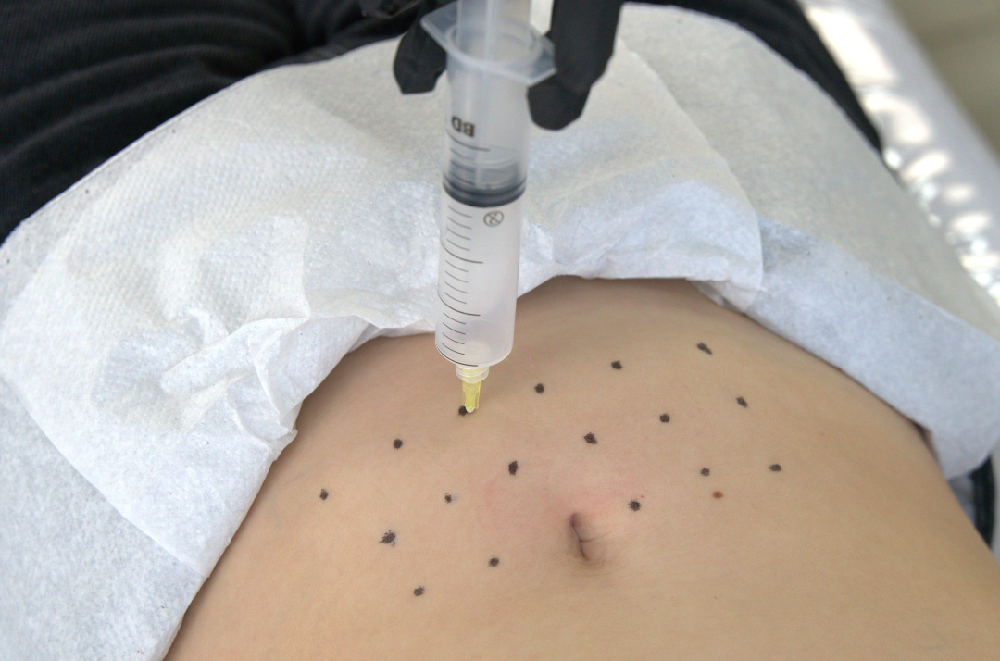

Longevidade Saudável: O Papel da Saúde Integrativa na Qualidade de Vida
A expectativa de vida aumentou dramaticamente no século XX. Mas a grande questão do século XXI não é mais quanto vamos viver — é como vamos viver esses anos. A saúde integrativa oferece uma abordagem preventiva e personalizada que vai além do tratamento de doenças, focando na manutenção da vitalidade e qualidade de vida ao longo do envelhecimento.

Longevidade saudável: muito além da ausência de doença
Durante décadas, a medicina convencional focou principalmente no tratamento de doenças após seu surgimento. A abordagem preventiva ficou em segundo plano. O resultado é que muitas pessoas chegam aos 70-80 anos tecnicamente "vivos", mas com qualidade de vida comprometida por doenças crônicas, dor, perda de mobilidade e deterioração cognitiva.
O conceito de longevidade saudável — ou healthspan, em contraste com lifespan — representa a parcela da vida vivida com saúde, independência e bem-estar. O objetivo não é apenas viver mais, mas viver bem por mais tempo.
A saúde integrativa contribui para isso atuando nos mecanismos do envelhecimento antes que as doenças se instalem.
Os pilares da longevidade saudável segundo a medicina integrativa
1. Redução da inflamação crônica
A inflamação crônica de baixo grau (inflammaging) está na raiz do envelhecimento acelerado e das doenças degenerativas. Ozonioterapia, dieta anti-inflamatória e fitoterapia atuam nesse mecanismo central.
2. Melhora da função mitocondrial
As mitocôndrias — "usinas de energia" das células — declínam com o envelhecimento. Ozonioterapia, exercício físico e suplementação (coenzima Q10, NAD+) suportam a função mitocondrial.
3. Equilíbrio hormonal
Hormônios declinam progressivamente após os 30-40 anos. A medicina funcional investiga esse declínio e oferece reposição ou suporte hormonal individualizado quando indicado.
4. Saúde do sistema nervoso
A terapia neural e outras abordagens neuromoduladores contribuem para a regulação do sistema nervoso autônomo, reduzindo o impacto do estresse crônico no envelhecimento.
5. Saúde do microbioma
O microbioma intestinal influencia imunidade, metabolismo e até saúde mental. A medicina integrativa avalia e cuida do microbioma como base da saúde sistêmica.
Ozonioterapia sistêmica para longevidade
A ozonioterapia sistêmica — principalmente por autohemoterapia ozonizada (grande autohemoterapia) ou insuflação retal — tem crescido no protocolo de longevidade por seus mecanismos bem documentados:
- Ativação das defesas antioxidantes endógenas: estimula superóxido dismutase, catalase e glutationa peroxidase — as principais enzimas antioxidantes do organismo
- Melhora da deformabilidade eritrocitária: os glóbulos vermelhos ficam mais flexíveis, melhorando a oxigenação tecidual
- Modulação imune: equilibra a resposta imune sem suprimi-la
- Redução da inflamação sistêmica: atua nos marcadores inflamatórios (PCR, IL-6, TNF-α)
- Efeito sobre telômeros: pesquisas preliminares sugerem que a ozonioterapia pode reduzir o estresse oxidativo dos telômeros — estruturas ligadas ao envelhecimento celular
Terapia neural e regulação do sistema nervoso
A terapia neural atua sobre o sistema nervoso autônomo — o responsável por regular todas as funções viscerais do organismo. Disfunções autonômicas crônicas, frequentemente não diagnosticadas pela medicina convencional, contribuem para inflamação, distúrbios do sono, problemas digestivos e redução da imunidade.
A regulação do sistema nervoso é cada vez mais reconhecida como central para a longevidade saudável — como demonstram os estudos sobre a variabilidade da frequência cardíaca (VFC) como biomarcador de saúde.
Cuide da sua longevidade com saúde integrativa
A Dra. Lara Cristian oferece uma abordagem integrativa personalizada que vai além da estética. Atendimento em Águas Claras, Brasília DF.
Longevidade da pele: saúde estética como expressão de saúde sistêmica
A saúde da pele é um reflexo do estado interno do organismo. A pele envelhecida precocemente frequentemente indica déficit de colágeno, estresse oxidativo elevado, desequilíbrios hormonais e inflamação crônica — os mesmos fatores que aceleram o envelhecimento sistêmico.
Por isso, procedimentos estéticos como bioestimuladores de colágeno, skinbooster e microagulhamento não são apenas "vaidade" — são parte de um protocolo mais amplo de manutenção da saúde e vitalidade.
Na LC Estética, a abordagem estética é sempre integrada à perspectiva de saúde global. A melhora da aparência é consequência e expressão de um organismo mais saudável.
Como começar um protocolo de longevidade?
A medicina preventiva e integrativa começa com avaliação:
- Exames laboratoriais completos: além do hemograma básico, inclui hormônios, vitaminas, marcadores inflamatórios, metabolismo ósseo e função mitocondrial
- Avaliação do estilo de vida: sono, estresse, atividade física, alimentação, exposição a toxinas
- Identificação de desequilíbrios: antes que se tornem doenças
- Protocolo personalizado: combinando intervenções nutricionais, suplementação baseada em evidências, terapias integrativas e cuidados estéticos quando indicados
Perguntas Frequentes
A capacidade de viver mais anos com qualidade de vida, saúde física e mental preservadas e independência funcional. A medicina preventiva e integrativa são fundamentais para alcançar esse objetivo.
Reduz inflamação crônica, melhora oxigenação celular, ativa defesas antioxidantes endógenas e modula o sistema imune — mecanismos centrais do envelhecimento saudável.
Não. Combina medicina convencional baseada em evidências com práticas complementares cientificamente embasadas. Não substitui diagnósticos e tratamentos convencionais — integra e potencializa.
Idealmente a partir dos 30-35 anos, mas nunca é tarde para começar. Mesmo após os 60-70 anos, a abordagem integrativa traz benefícios significativos na qualidade de vida.
Referências
- López-Otín C, Blasco MA, Partridge L, et al. "The hallmarks of aging." Cell. 2013;153(6):1194-217.
- Bocci V, Valacchi G. "Nrf2 activation as target to implement therapeutic treatments." Front Chem. 2015;3:4.
Saúde Integrativa e Longevidade em Águas Claras
A LC Estética e Saúde Integrativa oferece uma abordagem que cuida de você por inteiro. Avaliação com a Dra. Lara Cristian em Águas Claras, Brasília DF.